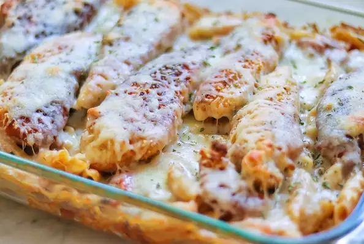

Anthony's Chicken

What is Anthony's Chicken?
Lightly breaded chicken breast covered with a honey mustard barbeque sauce
containing chopped bacon, diced tomatoes and onions.
This dish is baked over pasta topped with Monterey Jack cheese.
Some Ingridients
- 1 pound dry penne pasta
- 2 eggs
- 1/2 cup milk
Directions
- Preheat the oven to 350 degrees F (175 degrees C). Bring a large pot of
lightly salted water to a boil. Add pasta and cook for 8 to 10 minutes
or until al dente; drain. Transfer to a deep 9x13 inch baking dish.
- In a medium bowl, whisk together the eggs and milk. Season with salt and
pepper.
Dip the chicken breasts in the egg mixture, then roll in bread crumbs to
coat.
Heat the olive oil and butter in a large skillet over medium-high heat.
Fry chicken breasts until the juices run clear, and they are well browned
on both sides. Remove to paper towels to drain.
Drain excess oil from the chicken pan, leaving it coated.